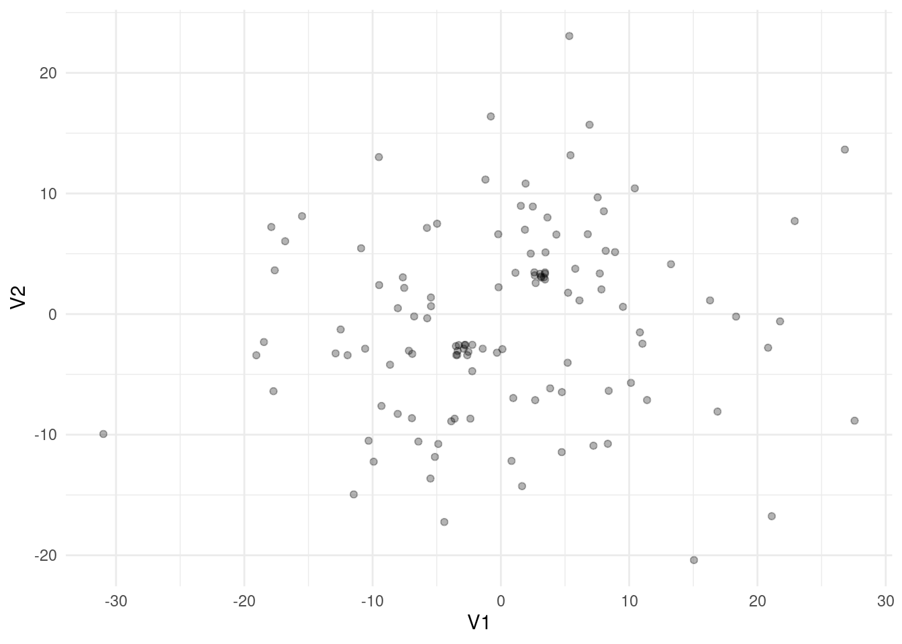
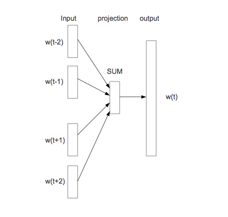
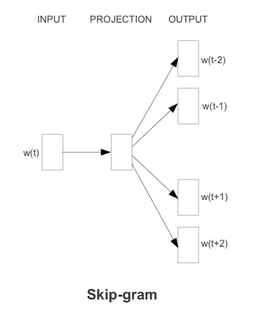

u <- c(2,3,-3,0,1)
v <- c(-2,0,1)
gustos <- u %*% t(v)
gustos [,1] [,2] [,3]
[1,] -4 0 2
[2,] -6 0 3
[3,] 6 0 -3
[4,] 0 0 0
[5,] -2 0 1En esta parte veremos otras maneras de hacer reducción de dimensionalidad para sistemas de recomendación y procesamiento de lenguaje natural. El enfoque de estos métodos es diferente a svd: en el primer caso utilizaremos factorizaciones generales de matrices, y en el segundo extraeremos información de capas de redes neuronales o modelos similares para obtener representaciones densas de dimensión relativamente baja.
En esta parte, consideramos la idea de utilizar reducción de dimensionalidad para hacer recomendaciones. Esta idea propone que hay ciertos factores latentes (no observados) que describen películas con “contenido implícito similar”, y usuarios según su interés en esa dimensión.
Otra manera de llamar estos factores latentes es embedding: buscamos un embedding (una representación numérica en cierta dimensión no muy alta) que nos permita predecir el gusto de un usuario por una película.
Este método nos permitirá también controlar mejor los resultados ruidosos que obtuvimos en los ejemplos anteriores (usando regularización y reducción de dimensión).
Por ejemplo: consideramos una dimensión de películas serias contra películas divertidas. \(3\) películas podrían describirse con
\[v=(-2,0,1)\],
lo que interpretamos como la película \(1\) es divertida (negativa en seriedad-diversión), la película \(2\) está en promedio, y la película \(3\) es más seria que las dos anteriores.
Por otro lado, tenemos descriptores de 5 usuarios:
\[u=(2,3,-3,0,1)\] que dice que a los primeros dos usuarios les gustan las películas serias, al tercero le gustan las divertidas, y los dos últimos no tienen preferencia clara a lo largo de esta dimensión.
Qusiéramos predecir el gusto usando estos dos vectores. Nuestras predicciones (considerando que \(u\) y \(v\) son matrices de una columna) serían simplemente
\[\widetilde{X} = u v^t\]
u <- c(2,3,-3,0,1)
v <- c(-2,0,1)
gustos <- u %*% t(v)
gustos [,1] [,2] [,3]
[1,] -4 0 2
[2,] -6 0 3
[3,] 6 0 -3
[4,] 0 0 0
[5,] -2 0 1Así que al usuario \(1\) le recomndamos la película \(3\), pero al usuario \(3\) le recomendamos la película \(1\).
La idea es entonces encontrar pesos para películas \(u\) y para usuarios \(v\) de forma que \(X\approx \widetilde{X} = uv^t\): podemos reproducir las calificaciones observadas a partir de nuestro modelo de factores latentes.
Nótese sin embargo que hay varias dimensiones que pueden describir a películas y usuarios: por ejemplo, seria-divertida, artística-hollywood, ciencia ficción, con/sin violencia, etc. Podemos proponer más dimensiones latentes de la siguiente forma:
Tenemos la dimensión anterior de seria-divertida
v_1 <- c(-2,0,1)
u_1 <- c(2,3,-3,0,1)Y supongamos que tenemos otra dimensión con violencia - sin violencia
v_2 <- c(-3,2,2)
u_2 <- c(-3,-3,0,-2,4)Que quiere decir que las películas \(2, 3\) tienen volencia, pero la película \(1\) no. Por otra parte, a los usuarios \(1,2\) y \(5\) no les gustan las películas con violencia, mientras que al usuario \(5\) si les gustan.
La idea ahora es que el gusto de una persona por una película se escribe como combinación de las dos dimensiones. Por ejemplo, para la persona \(1\) tenemos, y la película \(1\), empezamos haciendo
u_1[1]*v_1[1][1] -4u_2[1]*v_2[1][1] 9lo que quiere decir que el hecho de que la película \(1\) no sea seria le resta \(4\) en gusto (pues la película \(1\) está del lado “divertido”), pero le suma \(9\) en gusto, pues es una película sin violencia y esta persona está del lado “sin violencia”.
Sumamos para encontrar el gusto total
u_1[1]*v_1[1] + u_2[1]*v_2[1][1] 5Para calcular los gustos sobre todas las personas y películas, haríamos
U <- cbind(u_1, u_2)
V <- cbind(v_1, v_2)
U u_1 u_2
[1,] 2 -3
[2,] 3 -3
[3,] -3 0
[4,] 0 -2
[5,] 1 4V v_1 v_2
[1,] -2 -3
[2,] 0 2
[3,] 1 2U %*% t(V) [,1] [,2] [,3]
[1,] 5 -6 -4
[2,] 3 -6 -3
[3,] 6 0 -3
[4,] 6 -4 -4
[5,] -14 8 9Con \(k\) dimensiones latentes, el modelo que proponemos es:
\[\widetilde{X} = UV^t\]
donde \(U\) es una matrix de \(n\times k\) (\(n=\) número de usuarios), y \(V\) es una matriz de \(p \times k\), donde \(p\) es el número de películas.
Buscamos que, si \(X\) son las verdaderas calificaciones, entonces \[X\approx \widetilde{X}.\]
y nótese que esta aproximación es en el sentido de las entradas de \(X\) que son observadas. Sin embargo, \(\widetilde{X}\) nos da predicciones para todos los pares película-persona.
Bajo este modelo, la predicción para el usuario \(i\) y la película \(j\) es la siguiente suma sobre las dimensiones latentes:
\[\widetilde{x}_{ij} =\sum_k u_{ik} v_{jk}\]
que expresa el hecho de que el gusto de \(i\) por \(j\) depende de una combinación (suma) de factores latentes de películas ponderados por gusto por esos factores del usuario.
El número de factores latentes \(k\) debe ser seleccionado (por ejemplo, según el error de validación). Dado \(k\), para encontrar \(U\) y \(V\) (un total de \(k(n+p)\) parámetros) buscamos minimizar
\[\sum_{(i,j)\, obs} (x_{ij}-\widetilde{x}_{ij})^2,\]
que también podemos escribir este problema (recuérdese que \(u_i\) y \(v_j\) aquí son vectores renglón) como
\[\min_{U,V}\sum_{(i,j)\, obs} (x_{ij}-u_iv_j^t)^2\] donde \(u_i\) es el renglón \(i\)-esimo de \(U\) (gustos latentes del usuario \(i\) en cada dimensión), y \(v_j\) es el renglón \(j\)-ésimo de la matriz \(V\) (calificación latente de la película en cada dimensión)
El método de factorización de matrices de grado bajo (\(k\)) funciona compartiendo información a lo largo de películas y usuarios. Como tenemos que ajustar los datos observados, y solo tenemos a nuestra disposición \(k\) descriptores para cada película y usuario, una minimización exitosa captura regularidades en los datos.
Es importante que la representación sea de grado relativamente bajo, pues esta “compresión” es la que permite que las dimensiones latentes capturen regularidades que están en los datos observados (que esperamos encontrar en el proceso de ajuste).
Al reducir la dimensión, también funcionan mejor métricas relativamente simples para calcular similitud entre usuarios o películas.
Por ejemplo, supongamos que el gusto por las películas sólo depende de una dimensión sería - divertida. Si ajustamos un modelo de un solo factor latente, un mínimo se alcanzaría separando con la dimensión latente las películas serias de las divertidas, y los usuarios que prefieren películas serias o divertidas. Esta sería una buena explicación de los datos observados, y las predicciones para películas no vistas sería buena usando simplemente el valor en seriedad de la película (extraída de otras personas con gustos divertido o serio) y el gusto por seriedad de esa persona (extraida de la observación de que le gustan otras películas serias u otras divertidas).
Podemos usar también ideas de nuestro modelo base y modelar desviaciones en lugar de calificaciones directamente:
Si \(X^0\) son las predicciones del modelo de referencia (la media de la película más un ajuste que es la diferencia de la media de cada individuo menos la media global), y \[R = X-X^0\] son los residuales del modelo base, buscamos mejor \[R\approx \widetilde{X} = UV^t\] de manera que las predicciones finales son \[X^0 + \widetilde{X}\]
Veremos también más adelante cómo regularizar estos sesgos como parte de la construcción del modelo.
Como vimos arriba, reexpresamos nuestro problema como un problema de factorización de matrices (encontrar \(U\) y \(V\)). Hay varias alternativas populares para atacarlo:
No vamos a ver más de este enfoque de SVD que discutimos anteriormente, pues no es del todo apropiado: nuestras matrices tienen muchos datos faltantes, y SVD no está diseñado para lidiar con este problema. Se pueden hacer ciertas imputaciones (por ejemplo, insertar 0’s una vez que centramos por usuario), pero los siguientes dos métodos están mejor adaptados para nuestro problema.
Supongamos entonces que queremos encontrar matrices \(U\) y \(V\), donde \(U\) es una matrix de \(n \times k\) (\(n=\) número de usuarios), y \(V\) es una matriz de \(p \times k\), donde \(p\) es el número de películas que nos de una aproximación de la matrix \(X\) de calificaciones \[ X \approx UV^t \] Ahora supongamos que conocemos \(V_1\). Si este es el caso, entonces queremos resolver para \(U_1\): \[ \min_{U_1}|| X - U_1V_1^t||_{obs}^2\] Como \(V_1^t\) están fijas, este es un problema de mínimos cuadrados usual, y puede resolverse analíticamente (o usar descenso en gradiente, que es simple de calcular de forma analítica) para encontrar \(U_1\). Una vez que encontramos \(U_1\), la fijamos, e intentamos ahora resolver para \(V\):
\[ \min_{V_2}|| X - U_1V_2^t||_{obs}^2\] Y una vez que encontramos \(V_2\) resolvemos
\[ \min_{U_2}|| X - U_2V_2^t||_{obs}^2\]
Continuamos este proceso hasta encontrar un mínimo local o hasta cierto número de iteraciones. Para inicializar \(V_1\), en (Zhou et al. 2008) se recomienda tomar como primer renglón el promedio de las calificaciones de las películas, y el resto números aleatorios chicos (por ejemplo \(U(0,1)\)). También pueden inicializarse con números aleatorios chicos las dos matrices.
Para agregar regularización y lidiar con los datos ralos, podemos incluir un coeficiente adicional. Minimizamos entonces (como en (Zhou et al. 2008)):
\[\min_{U,V}\sum_{(i,j)\, obs} (x_{ij}-u_i^tv_j)^2 + \lambda \left ( \sum_i n_{i}||u_i||^2 + \sum_j m_{j} ||v_j||^2 \right)\]
y modificamos de manera correspondiente cada paso de mínimos cuadrados mostrado arriba. \(n_{i}\) es el número de evaluaciones del usuario \(i\), y \(m_j\) es el número de evaluaciones de la película \(j\).
Observaciones:
Este método está implementado en spark. La implementación está basada parcialmente en (Zhou et al. 2008). La inicialización es diferente en spark, ver el código, donde cada renglón se inicializa con un vector de \(N(0,1)\) normalizado.
Cuando tenemos las representaciones de personas/artículos, muchas veces los sistemas de recomendación pueden requerir buscar personas o artículos similares a uno dado (por ejemplo, para hacer una playlist basada en una canción, o mostrar artículos relacionados). Con este fin, podemos definir una medida de similitud entre vectores, por ejemplo, distancia euclideana o distancia coseno (ángulo entre los vectores).
El objetivo es entonces, dado el embedding (vector) de un artículo, por ejemplo, encontrar los 10 vectores más cercanos según nuestra medida de similitud. Este problema no es trivial si el espacio de artículos es muy grande, pues requiere recorrer todos los vectores y calcular la similitud. Igualmente, precalcular todas las similitudes es costoso en tiempo y espacio, pues requiere \(O(n^2)\) operaciones (considerar todos los pares posibles).
Una solución aproximada que se utiliza con frecuencia (ver por ejemplo esta librería de Spotify) cuando buscamos encontrar elementos muy similares comienza utilizando reducción de dimensionalidad utilizando proyecciones aleatorias, y formando cubetas de candidatos de similitud.
La idea general es como sigue: supongamos que utilizamos la similitud coseno. Escogemos al azar \(k\) vectores \(w_1,\ldots, w_k\) en el espacio de embeddings que nos interesa. Si tomamos un artículo dado representado por el vector \(v\), entonces para cada \(j\) consideramos:
Con esto obtenemos otra representación discreta de \(v\) como vector \((f_1(v),f_2(v),\dots, f_k(v) )\), que es una representación más pequeña (podemos codificar como entero por ejemplo). Agrupamos todos los artículos que tienen la misma representación en una misma cubeta. Así, cuando queremos buscar los artículos muy similares, sólo es necesario buscar en la cubeta correspondiente.
Estas funciones que transforman vectores en valores 1 o -1 se llaman, por su naturaleza aleatoria funciones hash. Construimos ahora nuestra función generadora de hashes:
gen_hash <- function(p){
# p es la dimensión del espacio
v <- rnorm(p)
# devolvemos una función que calcula la cubeta:
function(x){
sum(x * v) |> sign()
}
}
set.seed(823)
hash_1 <- gen_hash(2)
# los hashes de dos puntos:
hash_1(c(4, 7))[1] -1hash_1(c(-4, 7))[1] 1# el vector que escogimos es
environment(hash_1)$v[1] -0.9929091 -0.4400476La siguiente función genera dos clusters de puntos mezclados con puntos distribuidos normales con desviación estándar relativamente grande
set.seed(1021)
simular_puntos <- function(d = 2, n = 200){
#puntos muy cercanos a (3,3,..., 3):
mat_1 <- matrix(rnorm(10 * d, sd = 0.01) + 3, ncol = d)
#puntos muy cercanos a (-3,-3,..., -3):
mat_2 <- matrix(rnorm(10 * d, sd = 0.01) - 3, ncol = d)
# puntos distribuidos alrededor del origen:
mat_3 <- matrix(rnorm(n * d, sd = 10), ncol = d)
datos_tbl_vars <- rbind(mat_3, mat_1, mat_2) |>
as_tibble() |>
mutate(id_1 = row_number())
datos_tbl_vars
}
# diez puntos en cluster 1, diez en cluster 2, y 100 sin cluster:
datos_tbl_vars <- simular_puntos(d = 2, n = 100)Warning: The `x` argument of `as_tibble.matrix()` must have unique column names if
`.name_repair` is omitted as of tibble 2.0.0.
ℹ Using compatibility `.name_repair`.ggplot(datos_tbl_vars, aes(x = V1, y= V2)) +
geom_jitter(width = 0.5, height = 0.5, alpha = 0.3)
Para este ejemplo calculamos las similitudes reales entre todos los pares de puntos (esto generalmente es muy lento para datos grandes):
sim_e <- function(x, y){
sum(x * y) / sqrt(sum(x^2) * sum(y^2))
}
datos_tbl <- datos_tbl_vars |>
pivot_longer(-id_1, names_to = "variable", values_to = "valor") |>
group_by(id_1) |>
arrange(variable) |>
summarise(vec_1 = list(valor))
system.time(
pares_tbl <- datos_tbl |>
crossing(datos_tbl |>
rename(id_2 = id_1, vec_2 = vec_1)) |>
filter(id_1 < id_2) |>
mutate(sim = map2_dbl(vec_1, vec_2, sim_e))
) user system elapsed
0.028 0.000 0.028 pares_tbl |> head()# A tibble: 6 × 5
id_1 vec_1 id_2 vec_2 sim
<int> <list> <int> <list> <dbl>
1 1 <dbl [2]> 2 <dbl [2]> 0.925
2 1 <dbl [2]> 3 <dbl [2]> 0.0689
3 1 <dbl [2]> 4 <dbl [2]> -0.127
4 1 <dbl [2]> 5 <dbl [2]> -1.00
5 1 <dbl [2]> 6 <dbl [2]> 0.994
6 1 <dbl [2]> 7 <dbl [2]> 0.486 nrow(pares_tbl)[1] 7140Supongamos que queremos encontrar los pares con similitud mayor a 0.999:
pares_sim <- pares_tbl |> filter(sim > 0.999)
nrow(pares_sim)[1] 228Ahora veremos cómo encontrar estos pares de puntos cercanos.
Usaremos 4 hashes:
#generar hashes
set.seed(88)
hash_f <- map(1:4, ~ gen_hash(p = 2))
# esta es una función de conveniencia:
calculador_hashes <- function(hash_f){
function(z) {
map_int(hash_f, ~ .x(z))
}
}
calc_hashes <- calculador_hashes(hash_f)Calculamos las firmas:
firmas_tbl <- datos_tbl_vars |>
pivot_longer(cols = -id_1, names_to = "variable", values_to = "valor") |>
group_by(id_1) |>
summarise(vec_1 = list(valor)) |>
mutate(firma = map(vec_1, ~ calc_hashes(.x))) |>
select(id_1, firma)
firmas_tbl# A tibble: 120 × 2
id_1 firma
<int> <list>
1 1 <int [4]>
2 2 <int [4]>
3 3 <int [4]>
4 4 <int [4]>
5 5 <int [4]>
6 6 <int [4]>
7 7 <int [4]>
8 8 <int [4]>
9 9 <int [4]>
10 10 <int [4]>
# ℹ 110 more rowsfirmas_tbl$firma[[1]][1] -1 1 -1 1firmas_tbl$firma[[2]][1] -1 1 -1 1Para este ejemplo, consideraremos todos los pares que coinciden en todas las cubetas
cubetas_tbl <- firmas_tbl |>
mutate(cubeta = map_chr(firma, ~ paste(.x, collapse = "/")))
cubetas_tbl# A tibble: 120 × 3
id_1 firma cubeta
<int> <list> <chr>
1 1 <int [4]> -1/1/-1/1
2 2 <int [4]> -1/1/-1/1
3 3 <int [4]> 1/-1/-1/-1
4 4 <int [4]> -1/1/1/1
5 5 <int [4]> 1/-1/1/-1
6 6 <int [4]> -1/1/-1/1
7 7 <int [4]> 1/-1/-1/1
8 8 <int [4]> 1/-1/-1/1
9 9 <int [4]> 1/-1/-1/1
10 10 <int [4]> -1/1/1/1
# ℹ 110 more rowsAhora agrupamos cubetas y filtramos las que tienen más de un elemento
cubetas_tbl <- cubetas_tbl |> group_by(cubeta) |>
summarise(ids = list(id_1), n = length(id_1)) |>
filter(n > 1)
cubetas_tbl# A tibble: 8 × 3
cubeta ids n
<chr> <list> <int>
1 -1/-1/-1/1 <int [20]> 20
2 -1/1/-1/1 <int [16]> 16
3 -1/1/1/-1 <int [5]> 5
4 -1/1/1/1 <int [20]> 20
5 1/-1/-1/-1 <int [16]> 16
6 1/-1/-1/1 <int [8]> 8
7 1/-1/1/-1 <int [16]> 16
8 1/1/1/-1 <int [19]> 19Y finalmente, extraemos los pares candidatos:
candidatos_tbl <-
cubetas_tbl |>
mutate(pares_cand = map(ids, ~ combn(.x, 2, simplify = FALSE))) |>
select(cubeta, pares_cand) |>
unnest(pares_cand) |>
unnest_wider(pares_cand, names_sep = "_") |>
select(-cubeta) |>
unique()
candidatos_tbl# A tibble: 949 × 2
pares_cand_1 pares_cand_2
<int> <int>
1 15 18
2 15 22
3 15 35
4 15 37
5 15 38
6 15 60
7 15 63
8 15 66
9 15 82
10 15 111
# ℹ 939 more rowsnrow(candidatos_tbl)[1] 949En este caso, seguramente tenemos algunos falsos positivos que tenemos que filtrar, y quizá algunos falsos negativos.
Calculamos distancias para todos los pares candidatos (es una lista mucho más corta generalmente):
puntos_tbl <- datos_tbl_vars |>
pivot_longer(V1:V2) |>
group_by(id_1) |>
select(-name) |>
summarise(punto = list(value))
candidatos_tbl <-
candidatos_tbl |>
left_join(puntos_tbl |> rename(pares_cand_1 = id_1, punto_1 = punto)) |>
left_join(puntos_tbl |> rename(pares_cand_2 = id_1, punto_2 = punto))Joining with `by = join_by(pares_cand_1)`
Joining with `by = join_by(pares_cand_2)`candidatos_tbl# A tibble: 949 × 4
pares_cand_1 pares_cand_2 punto_1 punto_2
<int> <int> <list> <list>
1 15 18 <dbl [2]> <dbl [2]>
2 15 22 <dbl [2]> <dbl [2]>
3 15 35 <dbl [2]> <dbl [2]>
4 15 37 <dbl [2]> <dbl [2]>
5 15 38 <dbl [2]> <dbl [2]>
6 15 60 <dbl [2]> <dbl [2]>
7 15 63 <dbl [2]> <dbl [2]>
8 15 66 <dbl [2]> <dbl [2]>
9 15 82 <dbl [2]> <dbl [2]>
10 15 111 <dbl [2]> <dbl [2]>
# ℹ 939 more rowspares_similares_tbl <-
candidatos_tbl |>
mutate(sim = map2_dbl(punto_1, punto_2, sim_e)) |>
filter(sim > 0.999)nrow(pares_similares_tbl)[1] 224En este caso, sabemos cuáles son los pares que buscamos, así que podemos evaluar nuestro método:
verdadero_pos <- nrow(inner_join(pares_similares_tbl, pares_sim))Joining with `by = join_by(sim)`verdadero_pos[1] 224sensibilidad <- verdadero_pos / nrow(pares_sim)
sensibilidad[1] 0.9824561precision <- verdadero_pos / nrow(pares_similares_tbl)
precision[1] 1Como vemos, la precisión es 1 y la sensibilidad es alta. Nos faltó encontrar una pequeña parte de los pares similares.
Este método de hashing se llama más generalmente Locality Sensitive Hashing, y se utiliza para encontrar de manera eficiente pares de puntos similares en embeddings.
En lugar de sólo construir cubetas, también es posible almacenar la salida en estructura de árbol para hacer más eficientes las búsquedas.
Esta sección está basada en (Hu, Koren, y Volinsky 2008).
En el ejemplo que vimos arriba, la retroalimentación es expícita en el sentido de que los usuarios califican los artículos (\(1-\) no me gustó nada, hasta \(5-\) me gustó mucho). Sin embargo, es común encontrar casos donde no existe esta retroalimentación explícita, y solo tenemos medidas del gusto implícito, por ejemplo:
Estos datos tienen la ventaja de que describen acciones del usuario, en lugar de un rating que puede estar influido por sesgos de imagen o de la calificación que “debería” tener un artículo además de la preferencia: quizá disfruto muchísimo Buffy the Vampire Slayer, pero lo califico con un \(3\), aunque un documental de ballenas que simplemente me gustó le pongo un \(5\). En los datos implícitos se vería de todas formas mi consumo frecuente de Buffy the Vampire Slayer, y quizá unos cuantos de documentales famosos.
Sea \(r_{ij}\) una medida implícita como las mencionadas arriba, para el usuario \(i\) y el artículo \(j\). Ponemos \(r_{i,j}=0\) cuando no se ha observado interacción entre este usuario y el artículo.
Una diferencia importante con los ratings explícitos es que los datos implícitos son en un sentido menos informativos que los explícitos:
Puede ser que el valor de \(r_{ij}\) sea relativamente bajo (pocas interacciones), pero de todas formas se trate de un artículo que es muy preferido (por ejemplo, solo vi Star Wars I una vez, pero me gusta mucho, o nunca he encontrado Star Wars I en el catálogo). Esto no pasa con los ratings, pues ratings bajos indican baja preferencia.
Sin embargo, estamos seguros de que niveles altos de interacción (oyó muchas veces una canción, etc.), es indicación de preferencia alta.
Usualmente la medida \(r_{ij}\) no tiene faltantes, o tiene un valor implícito para faltantes. Por ejemplo, si la medida es % de la película que vi, todas las películas con las que no he interactuado tienen \(r_{ij}=0\).
Así que en nuestro modelo no necesariamente queremos predecir directamente la variable \(r_{ij}\): puede haber artículos con predicción baja de \(r_{ij}\) que descubramos de todas formas van a ser altamente preferidos. Un modelo que haga una predicción de \(r_{îj}\) reflejaría más los patrones de consumo actual en lugar de permitirnos descubrir artículos preferidos con los que no necesariamente existe interacción.
Consideremos los siguientes usuarios, donde medimos por ejemplo el número de minutos que pasó cada usuario viendo cada película:
imp <- tibble(usuario = 1:6,
StarWars1 = c(0, 0, 0, 150, 300, 250),
StarWars2 = c(250, 200, 0, 200, 220,180),
StarWars3 = c(0, 250, 300, 0, 0, 0),
Psycho = c(5, 1, 0, 0, 0, 2))
imp# A tibble: 6 × 5
usuario StarWars1 StarWars2 StarWars3 Psycho
<int> <dbl> <dbl> <dbl> <dbl>
1 1 0 250 0 5
2 2 0 200 250 1
3 3 0 0 300 0
4 4 150 200 0 0
5 5 300 220 0 0
6 6 250 180 0 2Quiséramos encontrar una manera de considerar los 0’s como información más suave (es decir, alguien puede tener valores bajos de interacción con una película, pero esto no implica necesariamente que no sea preferida). Esto implica que es más importante ajustar los valores altos del indicador implícito de preferencia.
Una solución propuesta en (Hu, Koren, y Volinsky 2008) (e implementada en spark) es darle menos importancia al valor \(r_{ij}\) en la construcción de los factores latentes, especialmente si tiene valores bajos.
Para hacer esto, primero definimos la variable de preferencia
\[p_{ij} = \begin{cases} 1, &\mbox{si } r_{ij}>0,\\ 0, &\mbox{si } r_{ij}=0.\\ \end{cases}\]
Esta variable \(p_{ij}\), cuando vale uno, indica algún nivel de confianza en la preferencia. ¿Pero qué tanto valor debemos darle a esta preferencia? Definimos la confianza como \[c_{ij} = 1+ \alpha r_{ui},\] donde \(\alpha\) es un parámetro que hay que afinar (por ejemplo \(\alpha\) entre \(1\) y \(50\)). Para predicciones de vistas de TV, en (Hu, Koren, y Volinsky 2008) utilizan \(\alpha = 40\), donde \(r_{ij}\) es el número de veces que el usuario ha visto un programa (contando vistas parciales, así que es un número real).
La función objetivo (sin regularización) se define como
\[ L = \sum_{(i,j)} c_{ij}(p_{ij} - \sum_{l=1}^k u_{i,l}v_{j,l})^2 \tag{16.1}\]
Nótese que :
Veamos cómo se ven soluciones de un factor
imp_mat <- imp |> select(-usuario) |> as.matrix()
error_explicito <- function(uv){
u <- matrix(uv[1:6], ncol = 1)
v <- matrix(uv[7:10], ncol = 1)
sum((imp_mat - u %*% t(v))^2)
}
error_implicito <- function(uv){
u <- matrix(uv[1:6], ncol = 1)
v <- matrix(uv[7:10], ncol = 1)
pref_mat <- as.numeric(imp_mat > 0) - u %*% t(v)
confianza <- 1 + 0.1 * imp_mat
sum((confianza * pref_mat)^2 )
}Si intentamos ajustar los ratings implícitos como si fueran explícitos, obtenemos los siguientes ajustados con un solo factor latente:
uv_inicial <- runif(10)
opt_exp <- optim(par = uv_inicial, error_explicito, method = "BFGS")
opt_exp$par[7:10][1] 28.6668987 35.5285942 9.0062834 0.2312475t(t(opt_exp$par[1:6])) %*% t(opt_exp$par[7:10]) |> round() [,1] [,2] [,3] [,4]
[1,] 118 146 37 1
[2,] 124 154 39 1
[3,] 36 44 11 0
[4,] 151 187 47 1
[5,] 217 269 68 2
[6,] 180 223 56 1Nótese que esta solución no es muy buena: una componente intenta capturar los patrones de consumo de estas cuatro películas.
Si usamos preferencias y confianza, obtenemos:
opt_imp <- optim(par = uv_inicial, error_implicito, method = "BFGS")
opt_imp$par[7:10][1] 1.1950285 1.1969381 1.1918477 0.7423818t(t(opt_imp$par[1:6])) %*% t(opt_imp$par[7:10]) |> round(2) [,1] [,2] [,3] [,4]
[1,] 1 1 0.99 0.62
[2,] 1 1 1.00 0.62
[3,] 1 1 1.00 0.62
[4,] 1 1 0.99 0.62
[5,] 1 1 1.00 0.62
[6,] 1 1 1.00 0.62que indica que la información en esta matriz es consistente con que todos los usuarios tienen preferencia alta por las tres películas de Star Wars, y menos por la cuarta.
Igual que en los ejemplos anteriores, usualmente se agregan términos de regularización para los vectores renglón \(u_i\) y \(v_j\).
La evaluación para modelos implícitos no es tan simple como en el caso explícito, pues no estamos modelando directamente los valores observados \(r_{ij}\). Medidas como RECM o MAD que usamos en el caso explícito no son tan apropiadas para este problema.
Una alternativa es, para cada usuario \(i\), ordenar los artículos de mayor a menor valor de \(\hat{p}_{ij} = u_iv_j^t\) (canciones, pellículas), y calculamos:
\[ rank = \frac{\sum_{j} p_{ij}rank_{i,j}}{\sum_j p_{ij}} \]
donde \(rank_{ij}\) es el percentil del artículo \(j\) en la lista ordenada de artículos. \(rank_{ij}=0\) para el mejor artículo, y \(rank_{ij}=1\) para el peor. Es decir, obtenemos valores más bajos si observamos que los usuarios interactúan con artículos que están más arriba en el ranking.
Esta suma es un promedio sobre los rankings del usuario con \(p_{ij}=1\), y menores valores son mejores (quiere decir que hubo alguna preferencia por los items con \(rank_{ij}\) bajo, es decir, los mejores de nuestra lista predicha. Es posible también hacer un promedio ponderado por \(r_{ij}\): \[ rank = \frac{\sum_{j} r_{ij}rank_{i,j}}{\sum_j r_{ij}} \]
que es lo mismo que la ecuación anterior pero ponderando por el interés mostrado en cada artículo con \(p_{ij}=1\).
Esta cantidad la podemos evaluar en entrenamiento y en validación. Para construir el conjunto de validación podemos hacer:
Estas cantidades dependen de cuántos datos tengamos, como siempre, para tener un tamaño razonable de datos de validación.
Otro tipo de embeddings similar al de los sistemas de recomendación es el de imágenes. En este caso, comenzamos con un clasificador de imágenes construido a partir de una red convolucional profunda, y consideramos las últimas capas que se utilizan para la clasificación. Estas últimas capas contienen información más relacionada con el contenido de la imagen que con patrones de pixeles generales, y puede ser utilizado para encontrar imágenes similares.
En esta aplicación, resolveremos el problema de encontrar imágenes duplicadas, por ejemplo en pinterest. Existen muchas imágenes con variaciones mínimas (crop, rotaciones, algunos cambios de colores, etc), y en general no queremos repetir muchas veces una imagen en el feed de un usuario.
Es claro que hacer comparaciones de pixeles no es una estrategia muy buena, porque las transformaciones de arriba puede producir diferencias grandes en los valores de los pixeles, aún cuando el contenido de la imagen es el mismo. Consideramos tres imágenes para probar:
Como veremos, estas tres imagenes son similares en distancia unas de otras en términos de pixeles (muy diferentes), aún cuando el contenido de las primeras dos es altamente similar.
En espacios de dimensión muy alta, como en imágenes, conviene hacer reducción de dimensionalidad para definir la métrica de distancia y utilizar estos métodos para encontrar vecinos cercanos.
Utilizaremos una red convolucional pre-entrenada para extraer características de las imágenes. En este caso, tomaremos la última penúltima capa (antes de la capa de softmax), que nos dará embeddings de tamaño 4096:
library(keras)
Attaching package: 'keras'The following object is masked from 'package:yardstick':
get_weightsmodelo <- application_vgg16(weights = 'imagenet')
# obtener la penúltima
embed_modelo <- keras_model(inputs = modelo$input,
outputs = get_layer(modelo, "fc2")$output)
embed_modeloModel: "model"
________________________________________________________________________________
Layer (type) Output Shape Param #
================================================================================
input_1 (InputLayer) [(None, 224, 224, 3)] 0
block1_conv1 (Conv2D) (None, 224, 224, 64) 1792
block1_conv2 (Conv2D) (None, 224, 224, 64) 36928
block1_pool (MaxPooling2D) (None, 112, 112, 64) 0
block2_conv1 (Conv2D) (None, 112, 112, 128) 73856
block2_conv2 (Conv2D) (None, 112, 112, 128) 147584
block2_pool (MaxPooling2D) (None, 56, 56, 128) 0
block3_conv1 (Conv2D) (None, 56, 56, 256) 295168
block3_conv2 (Conv2D) (None, 56, 56, 256) 590080
block3_conv3 (Conv2D) (None, 56, 56, 256) 590080
block3_pool (MaxPooling2D) (None, 28, 28, 256) 0
block4_conv1 (Conv2D) (None, 28, 28, 512) 1180160
block4_conv2 (Conv2D) (None, 28, 28, 512) 2359808
block4_conv3 (Conv2D) (None, 28, 28, 512) 2359808
block4_pool (MaxPooling2D) (None, 14, 14, 512) 0
block5_conv1 (Conv2D) (None, 14, 14, 512) 2359808
block5_conv2 (Conv2D) (None, 14, 14, 512) 2359808
block5_conv3 (Conv2D) (None, 14, 14, 512) 2359808
block5_pool (MaxPooling2D) (None, 7, 7, 512) 0
flatten (Flatten) (None, 25088) 0
fc1 (Dense) (None, 4096) 102764544
fc2 (Dense) (None, 4096) 16781312
================================================================================
Total params: 134,260,544
Trainable params: 134,260,544
Non-trainable params: 0
________________________________________________________________________________obtener_pixeles <- function(imagen_ruta){
img <- image_load(imagen_ruta, target_size = c(224,224))
x <- image_to_array(img)
array_reshape(x, c(1, dim(x)))
}
calcular_capa <- function(imagen_ruta){
x <- obtener_pixeles(imagen_ruta) |> imagenet_preprocess_input()
embed_modelo |> predict(x) |> as.numeric()
}
pixeles_1 <- obtener_pixeles("./figuras/elefante_1.jpg") |>
as.numeric()
pixeles_2 <- obtener_pixeles("./figuras/elefante_3.jpg") |>
as.numeric()
pixeles_3 <- obtener_pixeles("./figuras/leon_1.jpg") |>
as.numeric()Calculamos la distancia pixel a pixel:
mean((pixeles_2 - pixeles_1)^2)[1] 7040.36mean((pixeles_1 - pixeles_3)^2)[1] 7060.643Calculamos la penúltima capa de nuestro modelo para las imágenes de prueba:
features_1 <- calcular_capa("./figuras/elefante_1.jpg")
features_2 <- calcular_capa("./figuras/elefante_3.jpg")
features_3 <- calcular_capa("./figuras/leon_1.jpg")
length(features_1)[1] 4096Nótese ahora que la distancia en nuestro nuevo espacio de imágenes es mucho más chica para los elefantes que entre el león y los elefantes:
mean((features_2 - features_1)^2)[1] 0.8760022mean((features_1 - features_3)^2)[1] 3.17355Podemos usar entonces el siguiente proceso:
En esta parte empezamos a ver los enfoques más modernos (redes neuronales) para construir modelos de lenguajes y resolver tareas de NLP. Se trata de modelos de lenguaje que incluyen más estructura, son más fáciles de regularizar y de ampliar si es necesario para incluir dependencias de mayor distancia. El método de conteo/suavizamiento de ngramas es simple y funciona bien para algunas tareas, pero podemos construir mejores modelos con enfoques más estructurados, y con más capacidad para aprender aspectos más complejos del lenguaje natural.
Si \(w=w_1w_2\cdots w_N\) es una frase, y las \(w\) representan palabras, recordemos que un modelo de lenguaje con dependencia de \(n\)-gramas consiste de las probabilidades
\[P(w_t | w_{t-1} w_{t-2} \cdots w_{t-n+1}),\]
(n=2, bigramas, n=3 trigramas, etc.)
Un enfoque donde intentamos estimar directamente estas probabilidades de los datos observados (modelos de n-gramas) puede ser útil en algunos casos (por ejemplo autocorrección simple), pero en general la mayoría de las sucesiones del lenguaje no son observadas en ningún corpus, y es necesario considerar un un enfoque más estructurado pensando en representaciones “distribucionales” de palabras:
La idea de este modelo es entonces subsanar la relativa escasez de datos (comparado con todos los trigramas que pueden existir) con estructura. Sabemos que esta es una buena estrategia si la estructura impuesta es apropiada.
Una de las ideas fundamentales de este enfoque es representar a cada palabra como un vector numérico de dimensión \(d\). Esto se llama una representación vectorial distribuida, o también un embedding de palabras.
El objeto es entonces abstraer características de palabras (mediante estas representaciones) intentando no perder mucho de su sentido original, lo que nos permite conocer palabras por su contexto, aún cuando no las hayamos observado antes.
¿Cómo puede funcionar este enfoque? Por ejemplo, si vemos la frase “El gato corre en el jardín”, sabemos que una frase probable debe ser también “El perro corre en el jardín”, pero quizá nunca vimos en el corpus la sucesión “El perro corre”. La idea es que como “perro” y “gato” son funcionalmente similares (aparecen en contextos similares en otros tipos de oraciones como el perro come, el gato come, el perro duerme, este es mi gato, etc.), un modelo como el de arriba daría vectores similares a “perro” y “gato”, pues aparecen en contextos similares. Entonces el modelo daría una probabilidad alta a “El perro corre en el jardín”.
Podemos entonces construir una red neuronal con 2 capas ocultas como sigue (segimos (Bengio et al. 2003), una de las primeras referencias en usar este enfoque). Notamos que los enfoques más efectivos actualmente, con conjuntos de datos más grandes, se utilizan arquitecturas más refinadas que permiten modelación de dependencias de mayor distancia, comenzando con la idea de atención.
En este ejemplo usaremos el ejemplo de trigramas:
\[w_{n-2},w_{n-1} \to x = (C(w_{n-2}), C(w_{n-1})).\]
En esta capa calculamos \[z = \sigma (a + Hx),\] que resulta en un vector de tamaño \(h\).
En el ajuste maximizamos la verosimilitud:
\[\sum_t \log \hat{P}(w_{t,n}|w_{t,n-2}w_{t-n-1}) \]
La representación en la referencia (Bengio et al. 2003) es:

Esta idea original ha sido explotada con éxito, pero en arquitecturas más modernas (mediante el mecanismo de atención). Nótese que el número de parámetros es del orden de \(|V|(nm+h)\), donde \(|V|\) es el tamaño del vocabulario (decenas o cientos de miles), \(n\) es 3 o 4 (trigramas, 4-gramas), \(m\) es el tamaño de la representacion (cientos) y \(h\) es el número de nodos en la segunda capa (también cientos o miles). Esto resulta en el mejor de los casos en modelos con miles de millones de parámetros. Adicionalmente, hay algunos cálculos costosos, como el softmax (donde hay que hacer una suma sobre el vocabulario completo). En el paper original se propone descenso estocástico.
Veamos un ejemplo chico de cómo se vería el paso feed-forward de esta red. Supondremos en este ejemplo que los sesgos \(a,b\) son iguales a cero para simplificar los cálculos.
Consideremos que el texto de entrenamiento es “El perro corre. El gato corre. El león corre. El león ruge.”
En este caso, nuestro vocabulario consiste de los 8 tokens \(<s>\), el, perro, gato, león, corre, caza \(</s>\). Consideremos un modelo con \(d=2\) (representaciones de palabras en 2 dimensiones), y consideramos un modelo de trigramas.
Nuestra primera capa es una matriz \(C\) de tamaño \(2\times 8\), es decir, un vector de tamaño 2 para cada palabra. Por ejemplo, podríamos tener
library(tidyverse)
set.seed(63)
C <- round(matrix(rnorm(16, 0, 0.1), 2, 8), 2)
colnames(C) <- c("_s_", "el", "perro", "gato", "león", "corre", "caza", "_ss_")
rownames(C) <- c("d_1", "d_2")
C _s_ el perro gato león corre caza _ss_
d_1 0.13 0.05 0.05 0.04 -0.17 0.04 0.03 -0.02
d_2 -0.19 -0.19 -0.11 0.01 0.04 -0.01 0.02 0.02En la siguiente capa consideremos que usaremos, arbitrariamente, \(h=3\) unidades. Como estamos considerando bigramas, necesitamos una entrada de tamaño 4 (representación de un bigrama, que son dos vectores de la matriz \(C\), para predecir la siguiente palabra).
H <- round(matrix(rnorm(12, 0, 0.1), 3, 4), 2)
H [,1] [,2] [,3] [,4]
[1,] -0.04 0.12 -0.09 0.18
[2,] 0.09 0.10 0.06 0.08
[3,] 0.10 -0.08 -0.07 -0.13Y la última capa es la del vocabulario. Son entonces 8 unidades, con 3 entradas cada una. La matriz de pesos es:
U <- round(matrix(rnorm(24, 0, 0.1), 8, 3), 2)
rownames(U) <- c("_s_", "el", "perro", "gato", "león", "corre", "caza", "_ss_")
U [,1] [,2] [,3]
_s_ 0.05 -0.15 -0.30
el 0.01 0.16 0.15
perro -0.14 0.10 0.05
gato 0.04 0.09 0.12
león 0.06 -0.03 0.02
corre -0.01 0.00 -0.02
caza 0.10 0.00 0.06
_ss_ 0.07 -0.10 0.01Ahora consideremos cómo se calcula el objetivo con los datos de entrenamiento. El primer trigrama es (_s_, el). La primera capa entonces devuelve los dos vectores correspondientes a cada palabra (concatenado):
capa_1 <- c(C[, "_s_"], C[, "el"])
capa_1 d_1 d_2 d_1 d_2
0.13 -0.19 0.05 -0.19 La siguiente capa es:
sigma <- function(z){ 1 / (1 + exp(-z))}
capa_2 <- sigma(H %*% capa_1)
capa_2 [,1]
[1,] 0.4833312
[2,] 0.4951252
[3,] 0.5123475Y la capa final da
y <- U %*% capa_2
y [,1]
_s_ -0.203806461
el 0.160905460
perro 0.007463525
gato 0.125376210
león 0.024393066
corre -0.015080262
caza 0.079073967
_ss_ -0.010555858Y aplicamos softmax para encontrar las probabilidades
p <- exp(y)/sum(exp(y)) |> as.numeric()
p [,1]
_s_ 0.09931122
el 0.14301799
perro 0.12267376
gato 0.13802588
león 0.12476825
corre 0.11993917
caza 0.13178067
_ss_ 0.12048306Y la probabilidad es entonces
p_1 <- p["perro", 1]
p_1 perro
0.1226738 Cuya log probabilidad es
log(p_1) perro
-2.098227 Ahora seguimos con el siguiente trigrama, que es “(perro, corre)”. Necesitamos calcular la probabilidad de corre dado el contexto “el perro”. Repetimos nuestro cálculo:
capa_1 <- c(C[, "el"], C[, "perro"])
capa_1 d_1 d_2 d_1 d_2
0.05 -0.19 0.05 -0.11 capa_2 <- sigma(H %*% capa_1)
capa_2 [,1]
[1,] 0.4877275
[2,] 0.4949252
[3,] 0.5077494y <- U %*% capa_2
y [,1]
_s_ -0.202177217
el 0.160227709
perro 0.006598141
gato 0.124982290
león 0.024570880
corre -0.015032262
caza 0.079237709
_ss_ -0.010274101p <- exp(y)/sum(exp(y)) |> as.numeric()
p [,1]
_s_ 0.09947434
el 0.14292280
perro 0.12256912
gato 0.13797317
león 0.12479193
corre 0.11994636
caza 0.13180383
_ss_ 0.12051845Y la probabilidad es entonces
p_2 <- p["corre", 1]
log(p_2) corre
-2.120711 Sumando, la log probabilidad es:
log(p_1) + log(p_2) perro
-4.218937 y continuamos con los siguientes trigramas del texto de entrenamiento. Creamos una función
feed_fow_p <- function(trigrama, C, H, U){
trigrama <- strsplit(trigrama, " ", fixed = TRUE)[[1]]
capa_1 <- c(C[, trigrama[1]], C[, trigrama[2]])
capa_2 <- sigma(H %*% capa_1)
y <- U %*% capa_2
p <- exp(y)/sum(exp(y)) |> as.numeric()
p
}
feed_fow_dev <- function(trigrama, C, H, U) {
p <- feed_fow_p(trigrama, C, H, U)
trigrama_s <- strsplit(trigrama, " ", fixed = TRUE)[[1]]
log(p)[trigrama_s[3], 1]
}Y ahora aplicamos a todos los textos:
texto_entrena <- c("_s_ el perro corre _ss_", " _s_ el gato corre _ss_", " _s_ el león corre _ss_",
"_s_ el león caza _ss_", "_s_ el gato caza _ss_")
entrena_trigramas <- map(texto_entrena,
~tokenizers::tokenize_ngrams(.x, n = 3)[[1]]) |>
flatten() |> unlist()
entrena_trigramas [1] "_s_ el perro" "el perro corre" "perro corre _ss_" "_s_ el gato"
[5] "el gato corre" "gato corre _ss_" "_s_ el león" "el león corre"
[9] "león corre _ss_" "_s_ el león" "el león caza" "león caza _ss_"
[13] "_s_ el gato" "el gato caza" "gato caza _ss_" log_p <- sapply(entrena_trigramas, function(x) feed_fow_dev(x, C, H, U))
sum(log_p)[1] -31.21475Ahora piensa como harías más grande esta verosimilitud. Observa que “perro”, “gato” y “león”” están comunmente seguidos de “corre”. Esto implica que nos convendría que hubiera cierta similitud entre los vectores de estas tres palabras, por ejemplo:
C_1 <- C
indices <- colnames(C) %in% c("perro", "gato", "león")
C_1[1, indices] <- 3.0
C_1[1, !indices] <- -1.0
C_1 _s_ el perro gato león corre caza _ss_
d_1 -1.00 -1.00 3.00 3.00 3.00 -1.00 -1.00 -1.00
d_2 -0.19 -0.19 -0.11 0.01 0.04 -0.01 0.02 0.02La siguiente capa queremos que extraiga el concepto “animal” en la palabra anterior, o algo similar, así que podríamos poner en la unidad 1:
H_1 <- H
H_1[1, ] <- c(0, 0, 5, 0)
H_1 [,1] [,2] [,3] [,4]
[1,] 0.00 0.00 5.00 0.00
[2,] 0.09 0.10 0.06 0.08
[3,] 0.10 -0.08 -0.07 -0.13Nótese que la unidad 1 de la segunda capa se activa cuando la primera componente de la palabra anterior es alta. En la última capa, podríamos entonces poner
U_1 <- U
U_1["corre", ] <- c(4.0, -2, -2)
U_1["caza", ] <- c(4.2, -2, -2)
U_1 [,1] [,2] [,3]
_s_ 0.05 -0.15 -0.30
el 0.01 0.16 0.15
perro -0.14 0.10 0.05
gato 0.04 0.09 0.12
león 0.06 -0.03 0.02
corre 4.00 -2.00 -2.00
caza 4.20 -2.00 -2.00
_ss_ 0.07 -0.10 0.01que captura cuando la primera unidad se activa. Ahora el cálculo completo es:
log_p <- sapply(entrena_trigramas, function(x) feed_fow_dev(x, C_1, H_1, U_1))
sum(log_p)[1] -23.53883Y logramos aumentar la verosimilitud considerablemente. Compara las probabilidades:
feed_fow_p("el perro", C, H, U) [,1]
_s_ 0.09947434
el 0.14292280
perro 0.12256912
gato 0.13797317
león 0.12479193
corre 0.11994636
caza 0.13180383
_ss_ 0.12051845feed_fow_p("el perro", C_1, H_1, U_1) [,1]
_s_ 0.03493901
el 0.04780222
perro 0.03821035
gato 0.04690264
león 0.04308502
corre 0.33639351
caza 0.41087194
_ss_ 0.04179531feed_fow_p("el gato", C, H, U) [,1]
_s_ 0.09957218
el 0.14289131
perro 0.12246787
gato 0.13795972
león 0.12480659
corre 0.11993921
caza 0.13183822
_ss_ 0.12052489feed_fow_p("el gato", C_1, H_1, U_1) [,1]
_s_ 0.03489252
el 0.04769205
perro 0.03813136
gato 0.04679205
león 0.04298749
corre 0.33663831
caza 0.41117094
_ss_ 0.04169529Observación: a partir de este principio, es posible construir arquitecturas más refinadas que tomen en cuenta, por ejemplo, relaciones más lejanas entre partes de oraciones (no solo el contexto del n-grama), ver por ejemplo el capítulo 10 del libro de Deep Learning de Goodfellow, Bengio y Courville.
Abajo exploramos una parte fundamental de estos modelos: representaciones de palabras, y modelos relativamente simples para obtener estas representaciones.
Un aspecto interesante de el modelo de arriba es que nos da una representación vectorial de las palabras, en la forma de los parámetros ajustados de la matriz \(C\). Esta se puede entender como una descripción numérica de cómo funciona una palabra en el contexto de su n-grama.
Por ejemplo, deberíamos encontrar que palabras como “perro” y “gato” tienen representaciones similares. La razón es que cuando aparecen, las probabilidades sobre las palabras siguientes deberían ser similares, pues estas son dos palabras que se pueden usar en muchos contextos compartidos.
También podríamos encontrar que palabras como perro, gato, águila, león, etc. tienen partes o entradas similares en sus vectores de representación, que es la parte que hace que funcionen como “animal mamífero” dentro de frases.
Veremos que hay más razones por las que es interesante esta representación.
En estos ejemplos veremos cómo producir embeddings de palabras que son precursores de embeddings más refinados como los producidos por Modelos grandes de lenguajes (LLMs). Ver por ejemplo aquí.
Si lo que principalmente nos interesa es obtener una representación vectorial de palabras, es posible simplificar considerablemente el modelo de arriba o LLMs para poder entrenarlos mucho más rápido, y obtener una representación que en muchas tareas se desempeña bien ((Mikolov et al. 2013)).
Hay dos ideas básicas que se pueden usar para reducir la complejidad del entrenamiento (ver más en (Mikolov et al. 2013)):
Como ya no es de interés central predecir la siguiente palabra a partir de las anteriores, en estos modelos intentamos predecir la palabra central a partir de las que están alrededor.
La entrada es igual que en el modelo completo. En primer lugar, simplificamos la segunda capa oculta pondiendo en \(z\) el promedio de los vectores \(C(w_{n-2}), C(w_{n-1})\). La última capa la dejamos igual por el momento:

El modelo se llama bag-of-words porque todas las entradas de la primera capa oculta contribuyen de la misma manera en la salida, independientemente del orden. Aunque esto no suena como buena idea para construir un modelo de lenguaje, veremos que resulta en una representación adecuada para algunos problemas.
\[w_{n-2},w_{n-1} \to x = (C(w_{n-2}), C(w_{n-1})).\]
En la siguiente “capa” oculta simplemente sumamos las entradas de \(x\). Aquí nótese que realmente no hay parámetros.
Finalmente, la capa de salida debe ser un vector de probabilidades sobre todo el vocabulario \(|V|\). En esta capa tenemos pesos \(U\) y hacemos \[y = b + U\sigma (z),\] y finalmente usamos softmax para tener probabilidades que suman uno: \[p_i = \frac{\exp (y_i) }{\sum_j exp(y_j)}.\]
En el ajuste maximizamos la verosimilitud sobre el corpus. Por ejemplo, para una frase, su log verosimilitud es:
\[\sum_t \log \hat{P}(w_{t,n}|w_{t,n+1} \cdots w_{t-n-1}) \]
Otro modelo simplificado, con más complejidad computacional pero mejores resultados (ver (Mikolov et al. 2013)) que el bag-of-words, es el modelo de skip-grams. En este caso, dada cada palabra que encontramos, intentamos predecir un número fijo de las palabras anteriores y palabras posteriores (el contexto es una vecindad de la palabra).

La función objetivo se defina ahora (simplificando) como suma sobre \(t\):
\[-\sum_t \sum_{ -2\leq j \leq 2, j\neq 0} \log P(w_{t-j} | w_t)\] (no tomamos en cuenta dónde aparece exactamente \(w_{t-j}\) en relación a \(w_t\), simplemente consideramos que está en su contexto), donde
\[\log P(w_{t-j}|w_t) = u_{t-j}^tC(w_t) - \log\sum_k \exp{u_{k}^tC(w_t)}\]
Todavía se propone una simplificación adicional que resulta ser efectiva:
La siguiente simplificación consiste en cambiar la función objetivo. En word2vec puede usarse “muestreo negativo”.
Para empezar, la función objetivo original (para contexto de una sola palabra) es
\[E = -\log \hat{P}(w_{a}|w_{n}) = -y_{w_a} + \log\sum_j \exp(y_j),\]
donde las \(y_i\) son las salidas de la penúltima capa. La dificultad está en el segundo término, que es sobre todo el vocabulario en incluye todos los parámetros del modelo (hay que calcular las parciales de \(y_j\)’s sobre cada una de las palabras del vocabulario).
La idea del muestreo negativo es que si \(w_a\) está en el contexto de \(w_{n}\), tomamos una muestra de \(k\) palabras \(v_1,\ldots v_k\) al azar (2-50, dependiendo del tamaño de la colección), y creamos \(k\) “contextos falsos” \(v_j w_{n}\), \(j=1\ldots,k\). Minimizamos en lugar de la observación de arriba
\[E = -\log\sigma(y_{w_a}) + \sum_{j=1}^k \log\sigma(y_j),\] en donde queremos maximizar la probabilidad de que ocurra \(w_a\) vs. la probabilidad de que ocurra alguna de las \(v_j\). Es decir, solo buscamos optimizar parámetros para separar lo mejor que podamos la observación de \(k\) observaciones falsas, lo cual implica que tenemos que mover un número relativamente chico de parámetros (en lugar de todos los parámetros de todas las palabras del vocabulario).
Las palabras “falsas” se escogen según una probabilidad ajustada de unigramas (se observó empíricamente mejor desempeño cuando escogemos cada palabra con probabilidad proporcional a \(P(w)^{3/4}\), en lugar de \(P(w)\), ver (Mikolov et al. 2013)).
if(!require(wordVectors)){
devtools::install_github("bmschmidt/wordVectors",
dependencies = TRUE)
}
── R CMD build ─────────────────────────────────────────────────────────────────
* checking for file ‘/tmp/RtmpPIgqH8/remotes8fbba8c9463/bmschmidt-wordVectors-ad127c1/DESCRIPTION’ ... OK
* preparing ‘wordVectors’:
* checking DESCRIPTION meta-information ... OK
* cleaning src
* checking for LF line-endings in source and make files and shell scripts
* checking for empty or unneeded directories
* building ‘wordVectors_2.0.tar.gz’library(wordVectors)library(tidyverse)
ruta <- "../datos/noticias/ES_Newspapers.txt"
if(!file.exists(ruta)){
periodico <-
read_lines(file= "https://es-noticias.s3.amazonaws.com/Es_Newspapers.txt",
progress = FALSE)
write_lines(periodico, ruta)
} else {
periodico <- read_lines(file= ruta,
progress = FALSE)
}
normalizar <- function(texto, vocab = NULL){
# minúsculas
texto <- tolower(texto)
# varios ajustes
texto <- gsub("\\s+", " ", texto)
texto <- gsub("\\.[^0-9]", " _punto_ ", texto)
texto <- gsub(" _s_ $", "", texto)
texto <- gsub("\\.", " _punto_ ", texto)
texto <- gsub("[«»¡!¿?-]", "", texto)
texto <- gsub(";", " _punto_coma_ ", texto)
texto <- gsub("\\:", " _dos_puntos_ ", texto)
texto <- gsub("\\,[^0-9]", " _coma_ ", texto)
texto <- gsub("\\s+", " ", texto)
texto
}
periodico_df <- tibble(txt = periodico) |>
mutate(id = row_number()) |>
mutate(txt = normalizar(txt))Construimos un modelo con vectores de palabras de tamaño 100, skip-grams de tamaño 4, y ajustamos con muestreo negativo de tamaño 20:
if(!file.exists('./cache/noticias_w2v.txt')){
tmp <- tempfile()
# tokenización
write_lines(periodico_df$txt, tmp)
prep <- prep_word2vec(tmp,
destination = './cache/noticias_w2v.txt', bundle_ngrams = 2)
} Beginning tokenization to text file at ./cache/noticias_w2v.txtPrepping /tmp/RtmpPIgqH8/file8fbb3f22963dStarting training using file ./cache/noticias_w2v.txt
Words processed: 100K Vocab size: 73K
Words processed: 200K Vocab size: 124K
Words processed: 300K Vocab size: 168K
Words processed: 400K Vocab size: 209K
Words processed: 500K Vocab size: 247K
Words processed: 600K Vocab size: 281K
Words processed: 700K Vocab size: 314K
Words processed: 800K Vocab size: 346K
Words processed: 900K Vocab size: 376K
Words processed: 1000K Vocab size: 406K
Words processed: 1100K Vocab size: 434K
Words processed: 1200K Vocab size: 462K
Words processed: 1300K Vocab size: 489K
Words processed: 1400K Vocab size: 515K
Words processed: 1500K Vocab size: 540K
Words processed: 1600K Vocab size: 565K
Words processed: 1700K Vocab size: 590K
Words processed: 1800K Vocab size: 613K
Words processed: 1900K Vocab size: 637K
Words processed: 2000K Vocab size: 661K
Words processed: 2100K Vocab size: 684K
Words processed: 2200K Vocab size: 706K
Words processed: 2300K Vocab size: 729K
Words processed: 2400K Vocab size: 750K
Words processed: 2500K Vocab size: 771K
Words processed: 2600K Vocab size: 792K
Words processed: 2700K Vocab size: 813K
Words processed: 2800K Vocab size: 834K
Words processed: 2900K Vocab size: 854K
Words processed: 3000K Vocab size: 873K
Words processed: 3100K Vocab size: 893K
Words processed: 3200K Vocab size: 913K
Words processed: 3300K Vocab size: 932K
Words processed: 3400K Vocab size: 951K
Words processed: 3500K Vocab size: 970K
Words processed: 3600K Vocab size: 989K
Words processed: 3700K Vocab size: 1007K
Words processed: 3800K Vocab size: 1026K
Words processed: 3900K Vocab size: 1044K
Words processed: 4000K Vocab size: 1062K
Words processed: 4100K Vocab size: 1080K
Words processed: 4200K Vocab size: 1098K
Words processed: 4300K Vocab size: 1115K
Words processed: 4400K Vocab size: 1132K
Words processed: 4500K Vocab size: 1150K
Words processed: 4600K Vocab size: 1167K
Words processed: 4700K Vocab size: 1184K
Words processed: 4800K Vocab size: 1201K
Words processed: 4900K Vocab size: 1218K
Words processed: 5000K Vocab size: 1235K
Words processed: 5100K Vocab size: 1252K
Words processed: 5200K Vocab size: 1268K
Words processed: 5300K Vocab size: 1285K
Words processed: 5400K Vocab size: 1301K
Words processed: 5500K Vocab size: 1317K
Words processed: 5600K Vocab size: 1333K
Words processed: 5700K Vocab size: 1349K
Words processed: 5800K Vocab size: 1364K
Words processed: 5900K Vocab size: 1380K
Words processed: 6000K Vocab size: 1395K
Words processed: 6100K Vocab size: 1411K
Words processed: 6200K Vocab size: 1426K
Words processed: 6300K Vocab size: 1441K
Words processed: 6400K Vocab size: 1456K
Words processed: 6500K Vocab size: 1471K
Words processed: 6600K Vocab size: 1486K
Words processed: 6700K Vocab size: 1501K
Words processed: 6800K Vocab size: 1516K
Words processed: 6900K Vocab size: 1530K
Words processed: 7000K Vocab size: 1545K
Words processed: 7100K Vocab size: 1560K
Words processed: 7200K Vocab size: 1575K
Words processed: 7300K Vocab size: 1589K
Words processed: 7400K Vocab size: 1604K
Words processed: 7500K Vocab size: 1618K
Words processed: 7600K Vocab size: 1632K
Words processed: 7700K Vocab size: 1646K
Words processed: 7800K Vocab size: 1661K
Words processed: 7900K Vocab size: 1675K
Words processed: 8000K Vocab size: 1689K
Words processed: 8100K Vocab size: 1703K
Words processed: 8200K Vocab size: 1717K
Words processed: 8300K Vocab size: 1731K
Words processed: 8400K Vocab size: 1744K
Words processed: 8500K Vocab size: 1758K
Words processed: 8600K Vocab size: 1771K
Words processed: 8700K Vocab size: 1785K
Words processed: 8800K Vocab size: 1798K
Words processed: 8900K Vocab size: 1812K
Words processed: 9000K Vocab size: 1825K
Words processed: 9100K Vocab size: 1839K
Words processed: 9200K Vocab size: 1852K
Words processed: 9300K Vocab size: 1865K
Words processed: 9400K Vocab size: 1878K
Words processed: 9500K Vocab size: 1892K
Words processed: 9600K Vocab size: 1905K
Words processed: 9700K Vocab size: 1918K
Words processed: 9800K Vocab size: 1931K
Words processed: 9900K Vocab size: 1943K
Words processed: 10000K Vocab size: 1956K
Words processed: 10100K Vocab size: 1969K
Words processed: 10200K Vocab size: 1982K
Words processed: 10300K Vocab size: 1995K
Words processed: 10400K Vocab size: 2008K
Words processed: 10500K Vocab size: 2020K
Words processed: 10600K Vocab size: 2033K
Words processed: 10700K Vocab size: 2045K
Words processed: 10800K Vocab size: 2057K
Words processed: 10900K Vocab size: 2070K
Words processed: 11000K Vocab size: 2082K
Words processed: 11100K Vocab size: 2094K
Words processed: 11200K Vocab size: 2107K
Words processed: 11300K Vocab size: 2119K
Words processed: 11400K Vocab size: 2131K
Words processed: 11500K Vocab size: 2143K
Words processed: 11600K Vocab size: 2156K
Words processed: 11700K Vocab size: 2168K
Words processed: 11800K Vocab size: 2180K
Words processed: 11900K Vocab size: 2192K
Words processed: 12000K Vocab size: 2204K
Words processed: 12100K Vocab size: 2216K
Words processed: 12200K Vocab size: 2227K
Words processed: 12300K Vocab size: 2239K
Words processed: 12400K Vocab size: 2251K
Words processed: 12500K Vocab size: 2263K
Words processed: 12600K Vocab size: 2274K
Words processed: 12700K Vocab size: 2286K
Words processed: 12800K Vocab size: 2298K
Words processed: 12900K Vocab size: 2310K
Words processed: 13000K Vocab size: 2321K
Words processed: 13100K Vocab size: 2333K
Words processed: 13200K Vocab size: 2344K
Words processed: 13300K Vocab size: 2355K
Words processed: 13400K Vocab size: 2367K
Words processed: 13500K Vocab size: 2378K
Words processed: 13600K Vocab size: 2390K
Words processed: 13700K Vocab size: 2401K
Words processed: 13800K Vocab size: 2412K
Words processed: 13900K Vocab size: 2424K
Words processed: 14000K Vocab size: 2435K
Words processed: 14100K Vocab size: 2446K
Words processed: 14200K Vocab size: 2457K
Words processed: 14300K Vocab size: 2469K
Words processed: 14400K Vocab size: 2479K
Words processed: 14500K Vocab size: 2490K
Words processed: 14600K Vocab size: 2502K
Words processed: 14700K Vocab size: 2513K
Words processed: 14800K Vocab size: 2524K
Words processed: 14900K Vocab size: 2535K
Words processed: 15000K Vocab size: 2546K
Words processed: 15100K Vocab size: 2557K
Words processed: 15200K Vocab size: 2568K
Words processed: 15300K Vocab size: 2579K
Words processed: 15400K Vocab size: 2590K
Words processed: 15500K Vocab size: 2600K
Words processed: 15600K Vocab size: 2611K
Words processed: 15700K Vocab size: 2622K
Words processed: 15800K Vocab size: 2633K
Words processed: 15900K Vocab size: 2644K
Words processed: 16000K Vocab size: 2654K
Words processed: 16100K Vocab size: 2665K
Words processed: 16200K Vocab size: 2676K
Words processed: 16300K Vocab size: 2687K
Words processed: 16400K Vocab size: 2697K
Words processed: 16500K Vocab size: 2708K
Words processed: 16600K Vocab size: 2719K
Words processed: 16700K Vocab size: 2729K
Words processed: 16800K Vocab size: 2739K
Words processed: 16900K Vocab size: 2750K
Words processed: 17000K Vocab size: 2760K
Words processed: 17100K Vocab size: 2771K
Words processed: 17200K Vocab size: 2781K
Words processed: 17300K Vocab size: 2792K
Words processed: 17400K Vocab size: 2802K
Words processed: 17500K Vocab size: 2813K
Words processed: 17600K Vocab size: 2823K
Words processed: 17700K Vocab size: 2833K
Words processed: 17800K Vocab size: 2844K
Words processed: 17900K Vocab size: 2854K
Words processed: 18000K Vocab size: 2864K
Words processed: 18100K Vocab size: 2875K
Words processed: 18200K Vocab size: 2885K
Words processed: 18300K Vocab size: 2896K
Words processed: 18400K Vocab size: 2906K
Words processed: 18500K Vocab size: 2916K
Words processed: 18600K Vocab size: 2926K
Words processed: 18700K Vocab size: 2936K
Words processed: 18800K Vocab size: 2946K
Words processed: 18900K Vocab size: 2956K
Words processed: 19000K Vocab size: 2966K
Words processed: 19100K Vocab size: 2975K
Words processed: 19200K Vocab size: 2986K
Words processed: 19300K Vocab size: 2995K
Words processed: 19400K Vocab size: 3005K
Words processed: 19500K Vocab size: 3015K
Words processed: 19600K Vocab size: 3025K
Words processed: 19700K Vocab size: 3035K
Words processed: 19800K Vocab size: 3045K
Words processed: 19900K Vocab size: 3055K
Words processed: 20000K Vocab size: 3065K
Words processed: 20100K Vocab size: 3075K
Words processed: 20200K Vocab size: 3085K
Words processed: 20300K Vocab size: 3095K
Words processed: 20400K Vocab size: 3104K
Words processed: 20500K Vocab size: 3114K
Words processed: 20600K Vocab size: 3124K
Words processed: 20700K Vocab size: 3133K
Words processed: 20800K Vocab size: 3143K
Words processed: 20900K Vocab size: 3153K
Words processed: 21000K Vocab size: 3162K
Vocab size (unigrams + bigrams): 1814048
Words in train file: 21011278
Words written: 100K
Words written: 200K
Words written: 300K
Words written: 400K
Words written: 500K
Words written: 600K
Words written: 700K
Words written: 800K
Words written: 900K
Words written: 1000K
Words written: 1100K
Words written: 1200K
Words written: 1300K
Words written: 1400K
Words written: 1500K
Words written: 1600K
Words written: 1700K
Words written: 1800K
Words written: 1900K
Words written: 2000K
Words written: 2100K
Words written: 2200K
Words written: 2300K
Words written: 2400K
Words written: 2500K
Words written: 2600K
Words written: 2700K
Words written: 2800K
Words written: 2900K
Words written: 3000K
Words written: 3100K
Words written: 3200K
Words written: 3300K
Words written: 3400K
Words written: 3500K
Words written: 3600K
Words written: 3700K
Words written: 3800K
Words written: 3900K
Words written: 4000K
Words written: 4100K
Words written: 4200K
Words written: 4300K
Words written: 4400K
Words written: 4500K
Words written: 4600K
Words written: 4700K
Words written: 4800K
Words written: 4900K
Words written: 5000K
Words written: 5100K
Words written: 5200K
Words written: 5300K
Words written: 5400K
Words written: 5500K
Words written: 5600K
Words written: 5700K
Words written: 5800K
Words written: 5900K
Words written: 6000K
Words written: 6100K
Words written: 6200K
Words written: 6300K
Words written: 6400K
Words written: 6500K
Words written: 6600K
Words written: 6700K
Words written: 6800K
Words written: 6900K
Words written: 7000K
Words written: 7100K
Words written: 7200K
Words written: 7300K
Words written: 7400K
Words written: 7500K
Words written: 7600K
Words written: 7700K
Words written: 7800K
Words written: 7900K
Words written: 8000K
Words written: 8100K
Words written: 8200K
Words written: 8300K
Words written: 8400K
Words written: 8500K
Words written: 8600K
Words written: 8700K
Words written: 8800K
Words written: 8900K
Words written: 9000K
Words written: 9100K
Words written: 9200K
Words written: 9300K
Words written: 9400K
Words written: 9500K
Words written: 9600K
Words written: 9700K
Words written: 9800K
Words written: 9900K
Words written: 10000K
Words written: 10100K
Words written: 10200K
Words written: 10300K
Words written: 10400K
Words written: 10500K
Words written: 10600K
Words written: 10700K
Words written: 10800K
Words written: 10900K
Words written: 11000K
Words written: 11100K
Words written: 11200K
Words written: 11300K
Words written: 11400K
Words written: 11500K
Words written: 11600K
Words written: 11700K
Words written: 11800K
Words written: 11900K
Words written: 12000K
Words written: 12100K
Words written: 12200K
Words written: 12300K
Words written: 12400K
Words written: 12500K
Words written: 12600K
Words written: 12700K
Words written: 12800K
Words written: 12900K
Words written: 13000K
Words written: 13100K
Words written: 13200K
Words written: 13300K
Words written: 13400K
Words written: 13500K
Words written: 13600K
Words written: 13700K
Words written: 13800K
Words written: 13900K
Words written: 14000K
Words written: 14100K
Words written: 14200K
Words written: 14300K
Words written: 14400K
Words written: 14500K
Words written: 14600K
Words written: 14700K
Words written: 14800K
Words written: 14900K
Words written: 15000K
Words written: 15100K
Words written: 15200K
Words written: 15300K
Words written: 15400K
Words written: 15500K
Words written: 15600K
Words written: 15700K
Words written: 15800K
Words written: 15900K
Words written: 16000K
Words written: 16100K
Words written: 16200K
Words written: 16300K
Words written: 16400K
Words written: 16500K
Words written: 16600K
Words written: 16700K
Words written: 16800K
Words written: 16900K
Words written: 17000K
Words written: 17100K
Words written: 17200K
Words written: 17300K
Words written: 17400K
Words written: 17500K
Words written: 17600K
Words written: 17700K
Words written: 17800K
Words written: 17900K
Words written: 18000K
Words written: 18100K
Words written: 18200K
Words written: 18300K
Words written: 18400K
Words written: 18500K
Words written: 18600K
Words written: 18700K
Words written: 18800K
Words written: 18900K
Words written: 19000K
Words written: 19100K
Words written: 19200K
Words written: 19300K
Words written: 19400K
Words written: 19500K
Words written: 19600K
Words written: 19700K
Words written: 19800K
Words written: 19900K
Words written: 20000K
Words written: 20100K
Words written: 20200K
Words written: 20300K
Words written: 20400K
Words written: 20500K
Words written: 20600K
Words written: 20700K
Words written: 20800K
Words written: 20900K
Words written: 21000Kif (!file.exists("./cache/noticias_vectors.bin")) {
modelo <- train_word2vec("./cache/noticias_w2v.txt",
"./cache/noticias_vectors.bin",
vectors = 100, threads = 8, window = 4, cbow = 0,
iter = 20, negative_samples = 20, min_count = 10)
} else {
modelo <- read.vectors("./cache/noticias_vectors.bin")
}El resultado son los vectores aprendidos de las palabras, por ejemplo
vector_gol <- modelo[["gol"]] |> as.numeric()
vector_gol [1] -0.389627248 0.048135430 0.501164794 -0.035961468 0.291238993
[6] 0.642733335 -0.386596769 0.281559557 -0.199183896 -0.554564893
[11] 0.451201737 0.495587140 -0.525584400 0.166191801 -0.180947676
[16] 0.034590811 0.731496751 0.259901792 -0.201457486 -0.308042079
[21] -0.177875623 -0.220428273 0.408699900 0.001920983 0.011449666
[26] -0.718980432 0.153631359 -0.049470965 0.981541216 0.082757361
[31] -0.331263602 0.458369821 -0.429754555 0.128275126 -0.421742797
[36] 0.596242130 -0.093633644 0.066455603 -0.016802812 -0.301688135
[41] 0.079358041 0.446704596 -0.244078919 -0.137954682 0.695054173
[46] 0.335903019 0.216709450 0.604890466 -0.538004100 -0.291783333
[51] -0.579949379 -0.048889056 0.324184030 -0.055591993 -0.012452535
[56] -0.200338170 0.254620761 0.082836255 0.389545202 -0.185363784
[61] -0.021011911 0.307440221 0.415608138 0.248776823 -0.139897019
[66] 0.008641024 0.235776618 0.324411124 -0.171800703 0.131596789
[71] -0.163520932 0.370538741 -0.134094939 -0.193797469 -0.543500543
[76] 0.312639445 -0.172534481 -0.115350038 -0.293528855 -0.534602344
[81] 0.515545666 0.708557248 0.444676250 -0.054800753 0.388787180
[86] 0.483029991 0.281573176 0.434132993 0.441057146 -0.347387016
[91] -0.174339339 0.060069371 -0.034651209 0.407196820 0.661161661
[96] 0.261399239 -0.089392163 -0.043052837 -0.539683878 0.105241157Como discutimos arriba, palabras que se usan en contextos similares por su significado o por su función (por ejemplo, “perro” y “gato”“) deben tener representaciones similares, pues su contexto tiende a ser similar. La similitud que usamos el similitud coseno.
Podemos verificar con nuestro ejemplo:
ejemplos <- modelo |> closest_to("gol", n = 5)
ejemplos word similarity to "gol"
1 gol 1.0000000
2 golazo 0.8252912
3 segundo_gol 0.7978025
4 penalti 0.7764458
5 potente_disparo 0.7755037También podríamos calcular manualmente:
Que también podemos calcular como:
vector_penalti <- modelo[["penalti"]] |> as.numeric()
cosineSimilarity(modelo[["gol"]], modelo[["penalti"]]) [,1]
[1,] 0.7764458O directamente:
norma <- function(x) sqrt(sum(x^2))
sum(vector_gol * vector_penalti) / (norma(vector_gol) * norma(vector_penalti))[1] 0.7764458Ahora consideremos cómo se distribuyen las palabras en este espacio, y si existe estructura geométrica en este espacio que tenga información acerca del lenguaje.
Consideremos primero el caso de plurales de sustantivos.
Una de las relaciones geométricas más simples es la adición de vectores. Por ejemplo, extraemos la diferencia entre gol y goles:
ejemplos <- modelo |> closest_to("dos", n = 15)
ejemplos word similarity to "dos"
1 dos 1.0000000
2 tres 0.9666800
3 cuatro 0.9527403
4 cinco 0.9205234
5 siete 0.9024807
6 seis 0.8977667
7 ocho 0.8879153
8 nueve 0.8550580
9 trece 0.8514542
10 catorce 0.8321762
11 diez 0.8133345
12 quince 0.8102052
13 doce 0.8085939
14 once 0.8033385
15 veinte 0.7814970ejemplos <- modelo |> closest_to(c("lluvioso"), n = 5)
ejemplos word similarity to c("lluvioso")
1 lluvioso 1.0000000
2 caluroso 0.8041209
3 cálido 0.6896448
4 húmedo 0.6866749
5 gélido 0.6660152ejemplos <- modelo |> closest_to("presidente", n = 5)
ejemplos word similarity to "presidente"
1 presidente 1.0000000
2 vicepresidente 0.8412900
3 ex_presidente 0.8321029
4 máximo_representante 0.7781001
5 máximo_dirigente 0.7629962ejemplos <- modelo |> closest_to("parís", n = 5)
ejemplos word similarity to "parís"
1 parís 1.0000000
2 londres 0.9232452
3 nueva_york 0.8464673
4 roma 0.8443222
5 berlín 0.8081766Y vemos, por ejemplo, que el modelo puede capturar conceptos relacionados con el estado del clima, capitales de países y números - aún cuando no hemos anotado estas funciones en el corpus original. Estos vectores son similares porque tienden a ocurrir en contextos similares.
Ahora consideremos cómo se distribuyen las palabras en este espacio, y si existe estructura geométrica en este espacio que tenga información acerca del lenguaje.
Consideremos primero el caso de plurales de sustantivos.
Una de las relaciones geométricas más simples es la adición de vectores. Por ejemplo, extraemos la diferencia entre gol y goles:
plural_1 <- modelo[["goles"]] - modelo[["gol"]]
plural_1A VectorSpaceModel object of 1 words and 100 vectors
[,1] [,2] [,3] [,4] [,5] [,6]
[1,] -0.2301596 -0.2543171 -0.04071745 -0.2292878 0.004059255 -0.2283908
attr(,".cache")
<environment: 0x559f14cdb450>que es un vector en el espacio de representación de palabras. Ahora sumamos este vector a un sustantivo en singular, y vemos qué palabras están cercas de esta “palabra sintética”:
closest_to(modelo, ~ "partido" + "goles" - "gol", n = 5) word similarity to "partido" + "goles" - "gol"
1 partidos 0.7961097
2 goles 0.7589920
3 partidos_disputados 0.6937101
4 últimos_encuentros 0.6788752
5 encuentros 0.6697611Nótese que la más cercana es justamente el plural correcto, o otros plurales con relación al que buscábamos (como encuentros)
Otro ejemplo:
closest_to(modelo, ~ "mes" + "días" - "día", n = 20) word similarity to "mes" + "días" - "día"
1 tres_meses 0.7858109
2 días 0.7708776
3 meses 0.7655628
4 diez_días 0.7199002
5 seis_meses 0.7110105
6 quince_días 0.7092209
7 nueve_meses 0.6903626
8 doce_meses 0.6887811
9 mes 0.6785786
10 18_meses 0.6483637
11 48_horas 0.6392776
12 diez_años 0.6365554
13 años 0.6339559
14 semanas 0.6284049
15 quince_años 0.6281021
16 dos_semanas 0.6147185
17 trimestres 0.6012591
18 días_hábiles 0.5972889
19 veinticinco_años 0.5955164
20 nueves_meses 0.5947687Veremos ahora cómo funciona para el género de sustantivos:
fem_1 <- modelo[["presidenta"]] - modelo[["presidente"]]
closest_to(modelo, ~ "rey" + "presidenta" - "presidente", n = 5) |> filter(word != "rey") word similarity to "rey" + "presidenta" - "presidente"
1 reina 0.7402226
2 princesa 0.6662326
3 pía 0.6249812
4 perla 0.6189366closest_to(modelo, ~ "tío" + "presidenta" - "presidente", n = 5) |> filter(word != "tío") word similarity to "tío" + "presidenta" - "presidente"
1 dueña 0.7036596
2 hermana 0.6947787
3 abuela 0.6871846
4 tía 0.6850960La evaluación de estas aplicaciones puede hacerse por ejemplo, con tareas de analogía, con listas de singular/plurales, de adjetivos/adverbios, masculino/femenino, etc (ver (Mikolov et al. 2013)), ver por ejemplo aquí. Adicionalmente, si se utilizan en alguna tarea downstream, pueden evaluarse en el desempeño de esa tarea particular.
Ejercicio: ¿cómo usarías esta geometría para encontrar el país en el que está una capital dada?
Observación: falta afinar los parámetros en este modelo. Puedes probar cambiando negative sampling (por ejemplo, incrementa a 40), el número de vectores (50-200, por ejemplo), e incrementando window y el número de iteraciones.
Considera también un modelo preentrenado mucho más grande como este. Puedes bajar los vectores de palabras y repetir las tareas mostradas (el formato bin es estándar para la implementación que usamos de word2vec).